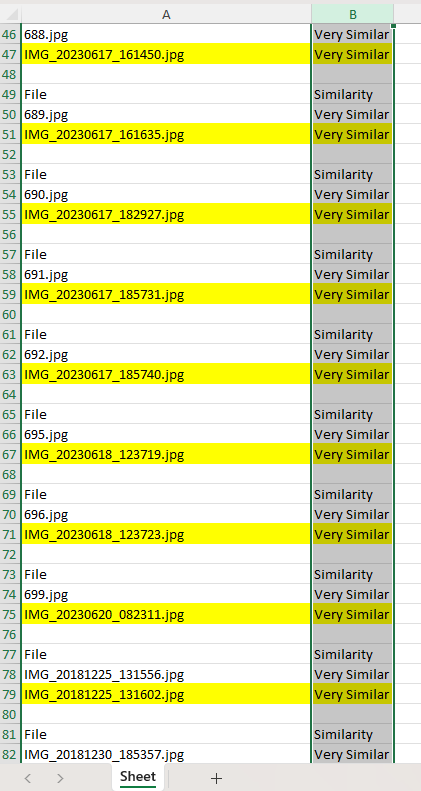

Anyone who wants to sort a photo folder that grew on its own: phone backups, family archives, a shared album that everyone added to.
Copies pile up without anyone meaning to. A photo gets resized, saved again, sent and saved back, and the file names stop matching. Sorting by hand means opening and comparing the pictures one by one.
Photo Duplicate Finder compares what the pictures look like, not their names, and lists the look-alikes in one Excel report, with the best copy highlighted. Nothing is deleted.
1 / 5find-duplicates <folder>
Rows 50–51: 689.jpg and IMG_20230617_161635.jpg. Different names, grouped as Very Similar.
414 photos in, 41 groups, 89 photos grouped.
All 41 groups correct, none split.
It missed 30 photos: 14 families, 2 triplets and 12 twins.
“Does the README say right now that the tool would catch all similar pictures? Cause this is not the case.”
It never said “all”, but it never said what the tool misses either. So I measured the misses, and the page now states them.